Соковыжиматель BORK S800
Мощный прибор для полного отделения сока от мякоти
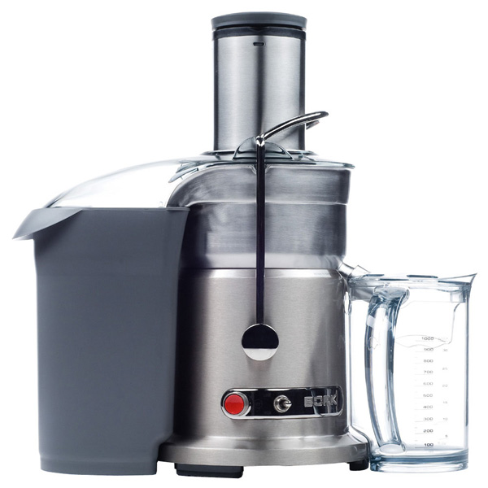Технические характеристики
Мощность: 1500 Вт/1200Вт
Количество скоростей: 2
Количество оборотов: 1-я скорость - 6500 об/мин, 2-я скорость -13000 об/мин;
Объём кувшина для сока: 1.0 л
Объём контейнера для жмыха: 3.5 л
Вес прибора: 6.62 кг
Габариты прибора: 320x220x420 мм
Срок гарантии: 1 год
Литой металлический корпус
Премиальный дизайн
Мощность 1500 Вт.
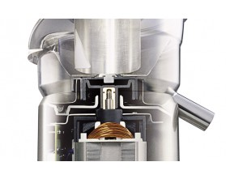
Чем выше мощность, тем:
Выше производительность, т.е. – большее количество продуктов, можно переработать за определенный промежуток времени.
Широкий загрузочный желоб 84 мм
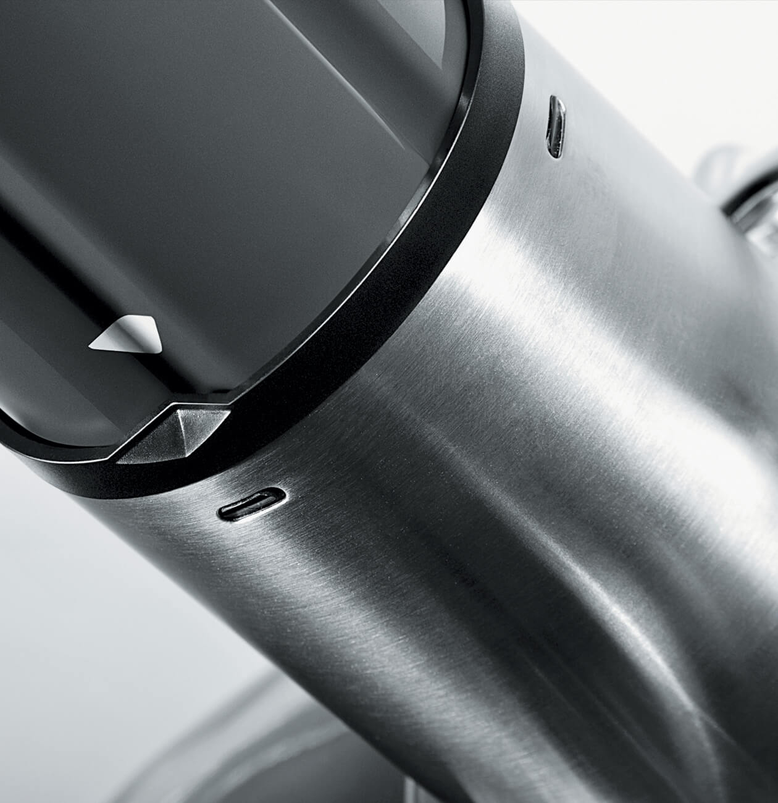ДИАМЕТР ЗАГРУЗОЧНОГО ЖЕЛОБА ПОЗВОЛЯЕТ ЗАГРУЖАТЬ ПРОДУКТЫ ЦЕЛИКОМ, НЕ РАЗРЕЗАЯ ИХ НА ЧАСТИ, ЧТО СПОСОБСТВУЕТ ПОЛУЧЕНИЮ БОЛЬШЕГО КОЛИЧЕСТВА СОКА ЗА МЕНЬШЕЕ ВРЕМЯ.
Количество оборотов соковыжималки:
- 1-я скорость - 6500 об/мин;
- 2-я скорость -13000 об/мин;
ПРОФЕССИОНАЛЬНЫЙ ДВИГАТЕЛЬ МОЩНОСТЬЮ 1500 ВТ ПОЗВОЛЯЕТ УДЕРЖИВАТЬ ЗАДАННЫЕ ОБОРОТЫ В ДИАПАЗОНЕ ОТ 6500 ДО 13000 В МИНУТУ ПРИ ЛЮБЫХ НАГРУЗКАХ, ДЛЯ ПОЛУЧЕНИЯ МАКСИМАЛЬНОГО КОЛИЧЕСТВА СОКА.
Плавный запуск двигателя
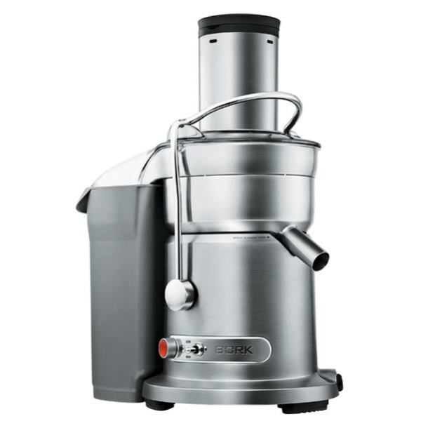Механизм плавного запуска асинхронных моторов (софтстартер) - это устройство, которое существенно повышает срок службы электродвигателя, работающего от вала данного мотора. При подаче напряжения питания простым методом, происходят процессы, рушащие электродвигатель.
Пусковой ток и напряжение на обмотках моторов, в момент запуска, существенно превосходят возможные значения. Что и ведет к повреждению изоляции обмоток, «сгоранию» контактов, существенно уменьшается срок эксплуатации подшипников мотора.
Все соковыжиматели BORK имеют плавный запуск двигателя
P.S. Покупателю, можно показать отсутствие данной функции поставив соковыжималку на лист бумаги и включив ее. Она развернется. Если данная функция присутствует, то аппарат останется на месте. Именно в соковыжималках без плавного запуска используются присоски на днище корпуса.
Микроячеястый фильтр BORK
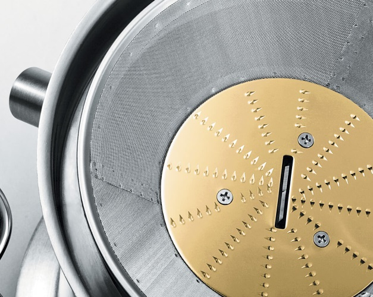СОК ПОЛУЧАЕТСЯ ЧИСТЫМ, А ЖМЫХ СУХИМ БЛАГОДАРЯ МЕЛКОЯЧЕИСТОМУ ФИЛЬТРУ ВЫПОЛНЕННОМУ ПО ТЕХНОЛОГИИ ЛАЗЕРНОЙ ПЕРФОРАЦИИ И ОБЛАДАЮЩЕМУ НЕПРЕВЗОЙДЕННОЙ СТЕПЕНЬЮ ФИЛЬТРАЦИИ. НИТРИД-ТИТАНОВОЕ ПОКРЫТИЕ ДЕЛАЕТ НОЖИ УСТОЙЧИВЫМИ К ИЗНОСУ, ОКИСЛЕНИЮ И КОРРОЗИИ.
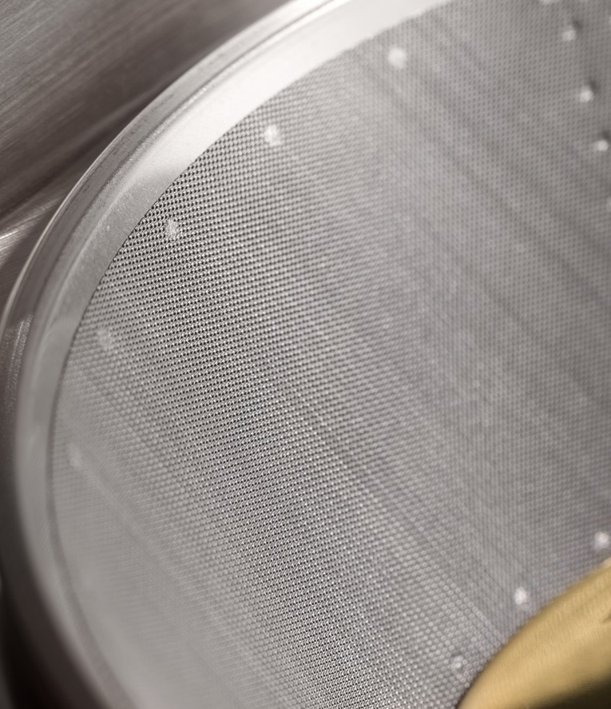 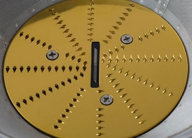Покрытие из нитрида титана
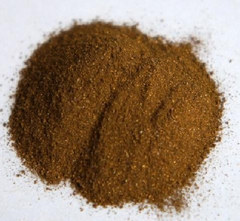Нитрид титана — бинарное химическое соединение титана с азотом.
Нитрид титана представляет собой порошок желто-коричневого цвета, а в компактном состоянии приобретает золотистую окраску.
Особенности нержавеющей стали, покрытой нитридом титана:
- Экологическая чистота используемых материалов
- Устойчивость к окислению при температурах 700-800 °С
- Высокая износостойкость, даже под воздействием жестких частиц природного происхождения
- Устойчивость к агрессивным средам, даже к кипящим кислотам, к примеру: температура кипения серной кислоты 338 °С
- Повышенная стойкость к коррозии: устойчивость в условиях повышенной влажности
Нитрид титана используется для создания износостойких покрытий.
В медицине при создании эндопротезов (искусственных костей и суставов), и зубных протезов. В быту, как стойкое защитное или декоративное покрытие столовых приборов.
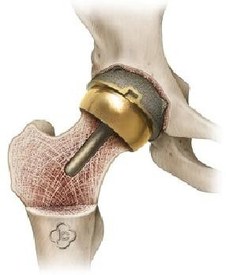 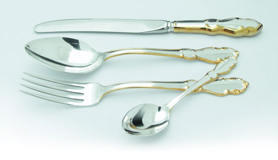 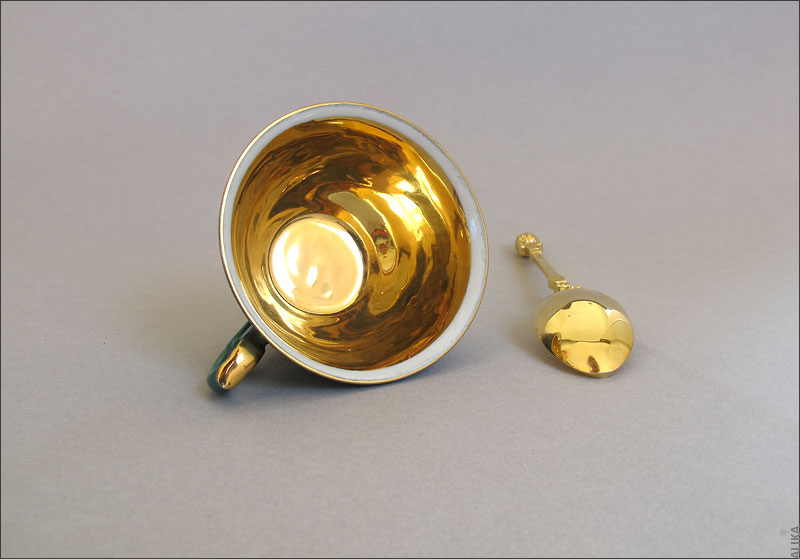 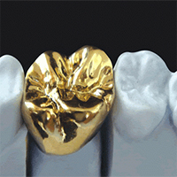Стойкость покрытия
Нитрид титана является одним из наиболее изученных и часто используемых тонкопленочных покрытий во всем мире.
С высокой твердостью ~85 HRC и толщиной всего 3 микрона, это покрытие повышает износостойкость режущих кромок, препятствует появлению царапин, а также уменьшает коэффициент трения на поверхности.
Срок эксплуатации в промышленных условиях достигает 50 лет.
Лучшие ножи, сделанные в Японии, в соответствии с многовековыми традициями изготовления холодного оружия, имеют твёрдость 50 - 70 по Роквеллу.
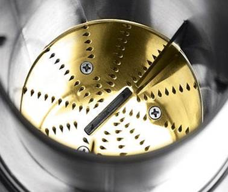Твёрдость 85 НRС.
Фиксация крышки соковыжималки
В соковыжимателях BORK удобная и надежная конструкция.
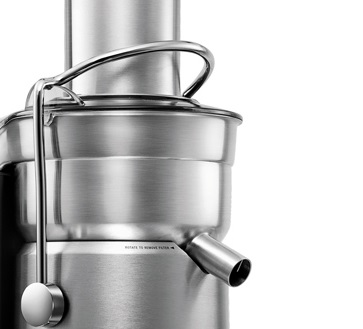Зажимы, фиксирующие верхнюю крышку , выполнены из металла. У человека использующего соковыжималку достаточно часто, металлическое крепление вызывает доверие, такое устройство более надежное и практичное.
Защита двигателя от перегрузки
В области вентилятора установлен термостат, также предохранитель располагается снизу моторной части. При чрезмерной загрузке автоматически активируется функция защиты от перегрузки и соковыжималка отключается. Если это произошло необходимо дать прибору остыть, после чего нажать кнопку «overload protection». Защита от перегрузки будет восстановлена.
Особенности
- Микроячеистый фильтр
- Стальные ножи с покрытием нитрида титана
- Автоматическое отключение при перегреве
- Блокировка при перегрузках
- Съёмный кувшин для сока с сепаратором пены
- Съёмный контейнер для мякоти
- Плавный запуск двигателя
- Принудительное воздушное охлаждение двигателя
Дополнительная информация
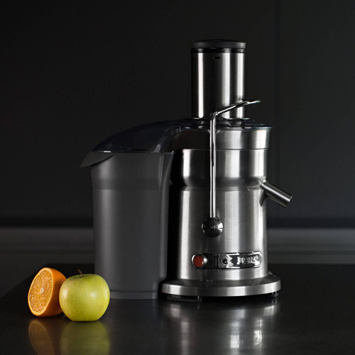- Автоматический выброс мякоти
- Колоссальная центробежная сила, создаваемая сверхмощным двигателем прибора,
- обеспечивает вращение фильтра со скоростью 6500-13000 обмин оборотов в минуту
- Патентованный широкий загрузочный желоб для продуктов диаметром 84 с центрирующим металлическим ножом
- Система включения устройства не позволит соковыжималке работать, если она неправильно собрана, что гарантирует безопасность и заявленные эксплуатационные характеристики
- Щетка для очистки в комплекте
- Все съёмные детали, после использования, пригодны для очистки в посудомоечной машине
- Автоматический выброс мякоти
- Идеально сбалансированный двигатель